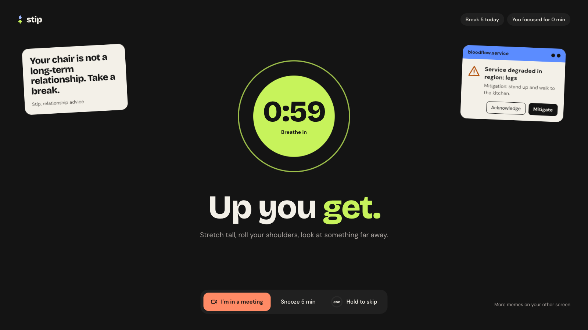
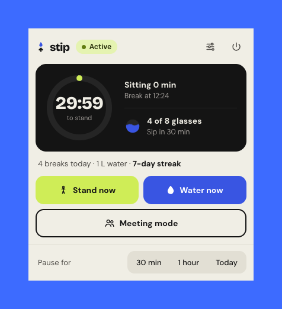
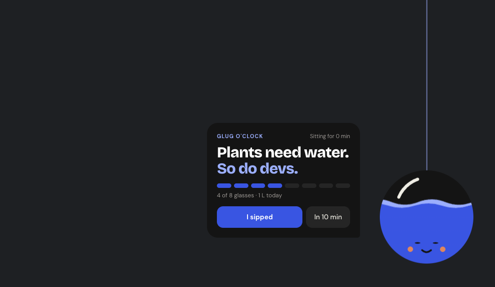
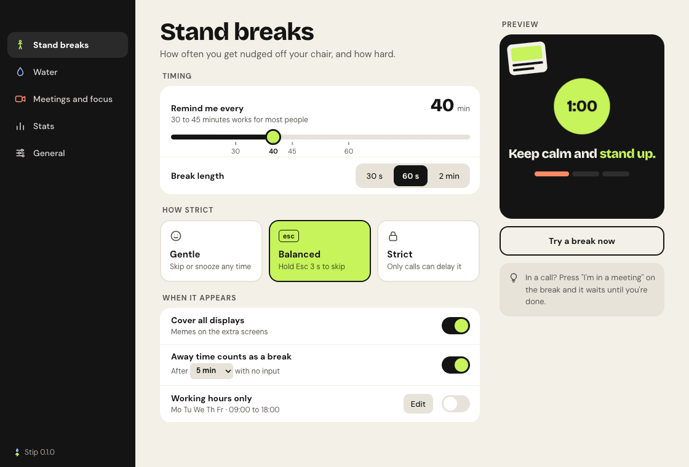
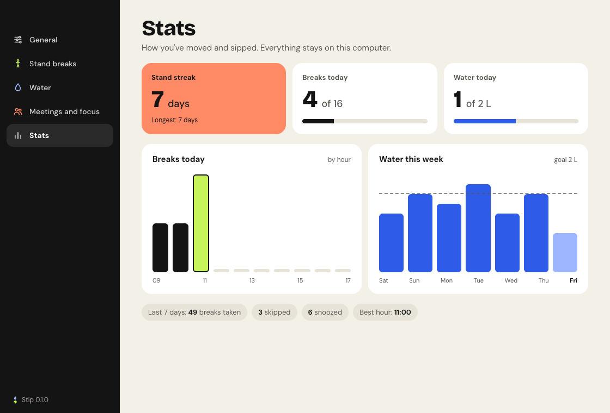
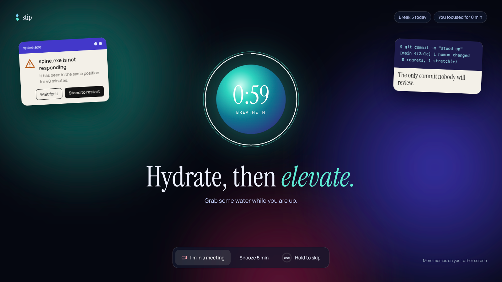

Thirty, then two
Thirty minutes sitting, then two minutes standing. That's the whole deal. Stip counts down quietly in your menu bar, then takes over every display with a breathing timer and something simple to do, so you actually get up instead of swatting a notification away.
30:00
2:00
It fits around your day
-
Cover every screen I have
Two monitors, two screens of break. The second one gets a meme.
-
Wait until my call is over
Breaks hold during Zoom calls and meeting mode, then start 30 seconds after.
-
Count my coffee run as a break
Three minutes away from the keyboard resets the timer. So does sleep.
-
Dim the screen when it's water time
The screen fades while a drop falls into an orb that shows today's glasses.
-
Leave me alone after six
Working hours only: no breaks outside 09:00 to 18:00, Monday to Friday.
Small when it should be
The rest of the time Stip stays in your menu bar or tray: the countdown, today's water, and one button for meetings.
Every half hour a drop runs down the edge of your screen into an orb in the corner. Its water level is how much you've had today. Clicks pass straight through to your work.


When will it ask?
See your week
Settings are plain and quick: how often, how long, how strict. The Stats page shows your stand streak, breaks by hour and water over the last seven days. All of it stays on your computer.


Or the calm one
Prefer something softer? The Aurora theme turns the break into a glowing night sky. Switch any time in settings.

Questions
Is it free? Yes. Stip is open source under the MIT licence, with no account, no ads and no paid tier.
Which computers does it run on? macOS, Windows and Linux. On macOS the countdown also sits right in the menu bar.
Does it send my data anywhere? No. Stip makes no network requests. Settings and stats are small files on your own computer.
What if I'm in a meeting? Press "I'm in a meeting" on the break, or turn on meeting mode from the tray. Zoom calls are spotted on their own. The break waits and starts 30 seconds after the call.
Can I put a break off? Snooze it for 5 minutes, twice in a row at most. After that, it's time to stand.
Can I skip a break? Yes, by holding Esc for three seconds, so you can't skip by reflex. Gentle mode lets you skip with one press; strict mode doesn't let you skip at all.
Will it bother me at night? Not if you set working hours. Outside them the tray just says when it'll be back.
Where do the memes come from? Thirty of them, all drawn in code: Stip's own, like "spine.exe is not responding", plus classic programming one-liners whose punchline lands a few seconds later.
How do I install it? Download the DMG for macOS, or the AppImage or .deb for Linux, from the latest release. Windows users can build it from source for now.
Can I help? Please do. Bug reports, new memes and pull requests are welcome; the contributing guide explains how.
Stand up.Then ship.
Free, open source, and running on your machine in about four minutes.
Get Stip on GitHub